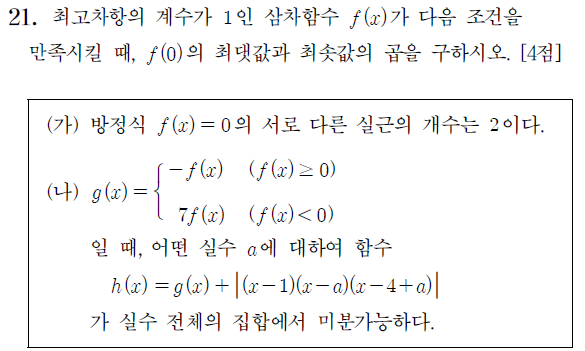

점수Score 0 / 0
0%
📘 [2027학년도 9월 고3 21번] 삼차함수와 절댓값 미분가능성 심층 분석📘 [2027 AY Sep Mock Exam Grade 12 #21] In-Depth Pedagogical Analysis: Cubic Function & Absolute Value Differentiability
기초→심화 단계별 5지선다 퀴즈. 정답 고르면 바로 채점+해설이 열립니다.Step-by-step 5-choice scaffolding quiz from fundamentals to advanced mastery. Instant scoring & explanations upon selection.
📌 원본 문제 (오늘의 목표)📌 Original CSAT Problem (Today's Goal)
2027학년도 9월 모의평가 수학 21번 [4점]2027 AY Sep Mock Exam Math #21 [4 pts]

📄 한국교육과정평가원 수능 모의평가 원본 시험지📄 Official KICE College Entrance Mock Exam Paper
📋 원본 문항 텍스트 조판 및 조건📋 Official Problem Statement & Conditions
21. 최고차항의 계수가 $1$인 삼차함수 $f(x)$가 다음 조건을 만족시킬 때, $f(0)$의 최댓값과 최솟값의 곱을 구하시오. [4점] 21. Let $f(x)$ be a cubic polynomial with leading coefficient $1$. When $f(x)$ satisfies the following conditions, find the product of the maximum and minimum values of $f(0)$. [4 pts]
(가) 방정식 $f(x) = 0$의 서로 다른 실근의 개수는 $2$이다.
(a) The equation $f(x) = 0$ has exactly $2$ distinct real roots.
(나) $g(x) = \begin{cases} -f(x) & (f(x) \ge 0) \\ 7f(x) & (f(x) < 0) \end{cases}$ 일 때, 어떤 실수 $a$에 대하여 함수
$$h(x) = g(x) + |(x - 1)(x - a)(x - 4 + a)|$$
가 실수 전체의 집합에서 미분가능하다.
(b) For $g(x) = \begin{cases} -f(x) & (f(x) \ge 0) \\ 7f(x) & (f(x) < 0) \end{cases}$, there exists a real number $a$ such that the function
$$h(x) = g(x) + |(x - 1)(x - a)(x - 4 + a)|$$
is differentiable on the set of all real numbers.
💡 핵심 길잡이: 삼차함수 $f(x)=(x-\alpha)^2(x-\beta)$에서 $g(x)$의 뾰족점($g'(\beta^+) - g'(\beta^-) = -8f'(\beta)$)과 $|P(x)|$의 V자 첨점이 만나는 경계점에서 우미분계수와 좌미분계수가 같아지는 미분가능 조건($h'(\beta^+) = h'(\beta^-) \iff P'(\beta) = 4f'(\beta)$)을 좌우 가로 배치로 한눈에 대조하며 풀이할 수 있습니다.
💡 Core Guide: For the monic cubic $f(x)=(x-\alpha)^2(x-\beta)$, differentiability at the boundary where the peak of $g(x)$ ($g'(\beta^+) - g'(\beta^-) = -8f'(\beta)$) meets the V-shaped corner of $|P(x)|$ is established by equating one-sided derivatives: $h'(\beta^+) = h'(\beta^-) \iff P'(\beta) = 4f'(\beta)$.
💡 프레임별 시각적 증명 분석 (PDF & GeoGebra 탐구)
수학자료실의 PDF 자료(접선에 접근하는 할선들 등)는 페이지를 넘길 때마다 미분계수가 탄생하는 극한의 전 과정이 생생하게 드러납니다.
• [초기 상태] 곡선 $y=f(x)$ 위의 고정점 $\mathrm{P}(a, f(a))$와 멀리 떨어진 동점 $\mathrm{Q}(x, f(x))$를 잇는 초록색 할선(Secant)의 평균변화율 $\frac{f(x)-f(a)}{x-a}$을 그립니다.
• [프레임의 연속 이동] $x \to a$로 접근함에 따라, 곡선을 타고 미끄러지는 동점 $\mathrm{Q}$와 함께 초록색 할선이 연속적으로 회전합니다.
• [극한의 합일] 마지막 순간, 초록색 할선이 빨간색 접선(Tangent)과 일치하며 순간변화율 $m = \lim_{x\to a}\frac{f(x)-f(a)}{x-a}$에 도달합니다.
• [기하학적 통찰] 본 문제의 핵심은 $g(x)$가 만드는 위로 뾰족한 첨점($g'(\beta^+) - g'(\beta^-) = -8f'(\beta)$)과 $|P(x)|$가 만드는 아래로 뾰족한 V자 첨점이 정확히 한 점에서 만나 우미분계수와 좌미분계수가 같아지는 미분가능 조건($h'(\beta^+) = h'(\beta^-) \iff -f'(\beta) + P'(\beta) = 7f'(\beta) - P'(\beta) \iff P'(\beta) = 4f'(\beta)$)을 만족시키는 데 있습니다.
수학자료실의 PDF 자료(접선에 접근하는 할선들 등)는 페이지를 넘길 때마다 미분계수가 탄생하는 극한의 전 과정이 생생하게 드러납니다.
• [초기 상태] 곡선 $y=f(x)$ 위의 고정점 $\mathrm{P}(a, f(a))$와 멀리 떨어진 동점 $\mathrm{Q}(x, f(x))$를 잇는 초록색 할선(Secant)의 평균변화율 $\frac{f(x)-f(a)}{x-a}$을 그립니다.
• [프레임의 연속 이동] $x \to a$로 접근함에 따라, 곡선을 타고 미끄러지는 동점 $\mathrm{Q}$와 함께 초록색 할선이 연속적으로 회전합니다.
• [극한의 합일] 마지막 순간, 초록색 할선이 빨간색 접선(Tangent)과 일치하며 순간변화율 $m = \lim_{x\to a}\frac{f(x)-f(a)}{x-a}$에 도달합니다.
• [기하학적 통찰] 본 문제의 핵심은 $g(x)$가 만드는 위로 뾰족한 첨점($g'(\beta^+) - g'(\beta^-) = -8f'(\beta)$)과 $|P(x)|$가 만드는 아래로 뾰족한 V자 첨점이 정확히 한 점에서 만나 우미분계수와 좌미분계수가 같아지는 미분가능 조건($h'(\beta^+) = h'(\beta^-) \iff -f'(\beta) + P'(\beta) = 7f'(\beta) - P'(\beta) \iff P'(\beta) = 4f'(\beta)$)을 만족시키는 데 있습니다.
💡 Frame-by-Frame Visual Proof Analysis (PDF & GeoGebra Exploration)
The archive's PDF materials (Secant lines approaching the tangent line, etc.) vividly demonstrate the emergence of the derivative limit frame-by-frame with each page turn.
• [Initial State] Secant line $PQ$ connects fixed point $P(a, f(a))$ and moving point $Q(x, f(x))$ on $y=f(x)$ with average rate of change $\frac{f(x)-f(a)}{x-a}$.
• [Continuous Frame Progression] As $x \to a$, moving point $Q$ slides along the curve and the green secant rotates continuously.
• [Convergence at Limit] At the final frame, the green secant coincides with the red tangent line, reaching instantaneous rate of change $m = \lim_{x\to a}\frac{f(x)-f(a)}{x-a}$.
• [Geometric Insight] The core of this problem is that the upward corner of $g(x)$ ($g'(\beta^+) - g'(\beta^-) = -8f'(\beta)$) and the downward V-corner of $|P(x)|$ cancel out at $x = \beta$, satisfying the differentiability condition $h'(\beta^+) = h'(\beta^-) \iff -f'(\beta) + P'(\beta) = 7f'(\beta) - P'(\beta) \iff P'(\beta) = 4f'(\beta)$.
The archive's PDF materials (Secant lines approaching the tangent line, etc.) vividly demonstrate the emergence of the derivative limit frame-by-frame with each page turn.
• [Initial State] Secant line $PQ$ connects fixed point $P(a, f(a))$ and moving point $Q(x, f(x))$ on $y=f(x)$ with average rate of change $\frac{f(x)-f(a)}{x-a}$.
• [Continuous Frame Progression] As $x \to a$, moving point $Q$ slides along the curve and the green secant rotates continuously.
• [Convergence at Limit] At the final frame, the green secant coincides with the red tangent line, reaching instantaneous rate of change $m = \lim_{x\to a}\frac{f(x)-f(a)}{x-a}$.
• [Geometric Insight] The core of this problem is that the upward corner of $g(x)$ ($g'(\beta^+) - g'(\beta^-) = -8f'(\beta)$) and the downward V-corner of $|P(x)|$ cancel out at $x = \beta$, satisfying the differentiability condition $h'(\beta^+) = h'(\beta^-) \iff -f'(\beta) + P'(\beta) = 7f'(\beta) - P'(\beta) \iff P'(\beta) = 4f'(\beta)$.
🔗 위 시각적 증명과 직결된 핵심 자료:
🔗 Core Visual Proof Resources for this problem:
📐
접선에 접근하는 할선들 (Secant lines approaching the tangent line)
Secant Lines Approaching the Tangent Line
🌟 위 설명 직결 핵심자료
🌟 Core Visual Proof
곡선 위의 고정점 $P$와 동점 $Q$를 잇는 초록색 할선이 $Q \to P$로 이동하며 빨간색 접선과 일치하는 미분계수의 기하학적 수렴 과정을 인터랙티브 앱렛과 단계별 PDF로 직접 확인할 수 있습니다.
Directly experience the geometric convergence where green secant $PQ$ rotates into the red tangent line as $Q \to P$ via interactive applets and step-by-step flipbook PDF.
📌
미분가능 함수 상의 한 점에서 접선과 법선 (Tangents and Normals at a Point)
Tangents and Normals at a Point on a Differentiable Function
미분계수와 매끄러움
Smoothness & Derivatives
미분계수의 좌우 극한이 일치하여 뾰족점(첨점) 없이 매끄러운 단일 접선이 결정되는 기하학적 조건과 원리를 AlgeoMath와 단계별 PDF로 증명합니다.
Explore the geometric principles where matching one-sided derivative limits guarantee a unique tangent line without corners via AlgeoMath and step-by-step PDF.
🔰 제0단계 · 수학 기호 및 기본 정리 디딤돌🔰 Step 0 · In-Depth Foundational Theorems & Mathematical Notation
📌 기본정리 1 · 대수학의 기본정리와 극값 접촉 원리
📌 Theorem 1 · Fundamental Theorem of Algebra & Tangent Extrema Geometry
1. 삼차함수 $f(x)=0$의 실근이 2개인 심층 원리와 기하학적 형태 (Type 1 vs Type 2)
1. In-Depth Theory & Geometric Classification of Monic Cubic with Exactly 2 Real Roots
$$f(x) = (x - \alpha)^2(x - \beta) \quad (\alpha \neq \beta) \iff (\text{극댓값}) \times (\text{극솟값}) = 0$$
$$f(x) = (x - \alpha)^2(x - \beta) \quad (\alpha \neq \beta) \iff (\text{Local Max}) \times (\text{Local Min}) = 0$$
• [대수학의 기본정리] 왜 반드시 (중근 1개 + 단순 실근 1개)여야 하는가?
최고차항의 계수가 $1$인 삼차방정식 $f(x)=0$은 복소수 범위에서 중복도를 고려할 때 정확히 3개의 근을 갖습니다. 실계수 다항식의 성질에 의해 허근은 항상 켤레복소수 쌍 $(p \pm qi, q \neq 0)$으로 2개씩 존재하므로, 실근의 개수는 오직 1개(실근 1개 + 허근 2개, 또는 삼중근 1개)이거나 3개뿐입니다.
따라서 "서로 다른 실근이 정확히 2개"가 되려면, 3개의 실근 중 두 실근이 완벽히 일치하여 중근(Multiplicity 2)을 이루어야만 합니다! 중근을 $\alpha$, 단순 실근을 $\beta$ ($\alpha \neq \beta$)라 하면 $f(x)$는 다음과 같이 오직 하나의 형태로 인수분해됩니다:
최고차항의 계수가 $1$인 삼차방정식 $f(x)=0$은 복소수 범위에서 중복도를 고려할 때 정확히 3개의 근을 갖습니다. 실계수 다항식의 성질에 의해 허근은 항상 켤레복소수 쌍 $(p \pm qi, q \neq 0)$으로 2개씩 존재하므로, 실근의 개수는 오직 1개(실근 1개 + 허근 2개, 또는 삼중근 1개)이거나 3개뿐입니다.
따라서 "서로 다른 실근이 정확히 2개"가 되려면, 3개의 실근 중 두 실근이 완벽히 일치하여 중근(Multiplicity 2)을 이루어야만 합니다! 중근을 $\alpha$, 단순 실근을 $\beta$ ($\alpha \neq \beta$)라 하면 $f(x)$는 다음과 같이 오직 하나의 형태로 인수분해됩니다:
$$f(x) = (x - \alpha)^2(x - \beta)$$
• [미적분학적 원리] 왜 중근 $\alpha$는 $x$축에 '접하는 극값'인가?
$f(x) = (x-\alpha)^2(x-\beta)$의 $x=\alpha$에서의 미분계수를 계산하면:
또한 인수 $(x-\alpha)^2 \ge 0$은 $\alpha$의 좌우에서 부호가 변하지 않으므로, 그래프는 $x$축을 가로지르지 못하고 $x$축에 닿았다가 튕겨 나옵니다(극대 또는 극소 형성)! 반면 $(x-\beta)$는 1차식이므로 $x=\beta$ 좌우에서 부호가 반전되어 $x$축을 상향 관통합니다.
$f(x) = (x-\alpha)^2(x-\beta)$의 $x=\alpha$에서의 미분계수를 계산하면:
$$f'(\alpha) = \lim_{x \to \alpha} \frac{f(x) - f(\alpha)}{x - \alpha} = \lim_{x \to \alpha} (x-\alpha)(x-\beta) = 0$$
함숫값 $f(\alpha)=0$이면서 동시에 접선의 기울기 $f'(\alpha)=0$이므로, 점 $(\alpha, 0)$에서의 접선은 바로 $y = 0$ ($x$축 자체)입니다.또한 인수 $(x-\alpha)^2 \ge 0$은 $\alpha$의 좌우에서 부호가 변하지 않으므로, 그래프는 $x$축을 가로지르지 못하고 $x$축에 닿았다가 튕겨 나옵니다(극대 또는 극소 형성)! 반면 $(x-\beta)$는 1차식이므로 $x=\beta$ 좌우에서 부호가 반전되어 $x$축을 상향 관통합니다.
• [극값 판별식] 극댓값과 극솟값의 곱으로 본 실근 2개 조건
극값을 갖는 삼차함수에서 $(\text{극댓값}) \times (\text{극솟값}) < 0$이면 서로 다른 3실근, $> 0$이면 1실근(2허근)입니다.
따라서 실근이 정확히 2개라는 것은 $(\text{극댓값}) \times (\text{극솟값}) = 0$, 즉 극댓값이나 극솟값 중 하나가 정확히 $0$이 되어 극점의 꼭짓점이 $x$축 위에 얹혀 있음을 뜻합니다!
극값을 갖는 삼차함수에서 $(\text{극댓값}) \times (\text{극솟값}) < 0$이면 서로 다른 3실근, $> 0$이면 1실근(2허근)입니다.
따라서 실근이 정확히 2개라는 것은 $(\text{극댓값}) \times (\text{극솟값}) = 0$, 즉 극댓값이나 극솟값 중 하나가 정확히 $0$이 되어 극점의 꼭짓점이 $x$축 위에 얹혀 있음을 뜻합니다!
• [Fundamental Theorem of Algebra] Why (1 Double Root + 1 Simple Root)?
A cubic $f(x)=0$ has 3 roots in $\mathbb{C}$. Because coefficients are real, complex roots always appear in conjugate pairs $(p \pm qi)$. Thus, a cubic equation can only possess either 1 real root (with 2 non-real complex roots or a triple root) or 3 real roots. To possess **exactly 2 distinct real roots**, two roots must coincide into a **double root $\alpha$ (multiplicity 2)** alongside one **simple root $\beta$**, forcing $f(x) = (x - \alpha)^2(x - \beta)$ ($\alpha \neq \beta$).
• [Calculus & Tangency] Why Does $\alpha$ Touch the x-Axis Horizontally?
Evaluating the derivative at $\alpha$ gives $f'(\alpha) = 0$. Since $f(\alpha)=0$ and $f'(\alpha)=0$, the tangent at $(\alpha, 0)$ is $y=0$ (the x-axis itself). Furthermore, $(x-\alpha)^2 \ge 0$ never changes sign locally, so the curve bounces off the x-axis rather than crossing it (creating a local extremum). Conversely, the linear factor $(x-\beta)$ changes sign, cutting transversely across the x-axis.
• [Extremum Criterion] $(\text{Local Max}) \times (\text{Local Min}) = 0 \iff$ one extremum touches the x-axis tangentially!
A cubic $f(x)=0$ has 3 roots in $\mathbb{C}$. Because coefficients are real, complex roots always appear in conjugate pairs $(p \pm qi)$. Thus, a cubic equation can only possess either 1 real root (with 2 non-real complex roots or a triple root) or 3 real roots. To possess **exactly 2 distinct real roots**, two roots must coincide into a **double root $\alpha$ (multiplicity 2)** alongside one **simple root $\beta$**, forcing $f(x) = (x - \alpha)^2(x - \beta)$ ($\alpha \neq \beta$).
• [Calculus & Tangency] Why Does $\alpha$ Touch the x-Axis Horizontally?
Evaluating the derivative at $\alpha$ gives $f'(\alpha) = 0$. Since $f(\alpha)=0$ and $f'(\alpha)=0$, the tangent at $(\alpha, 0)$ is $y=0$ (the x-axis itself). Furthermore, $(x-\alpha)^2 \ge 0$ never changes sign locally, so the curve bounces off the x-axis rather than crossing it (creating a local extremum). Conversely, the linear factor $(x-\beta)$ changes sign, cutting transversely across the x-axis.
• [Extremum Criterion] $(\text{Local Max}) \times (\text{Local Min}) = 0 \iff$ one extremum touches the x-axis tangentially!
📊
삼차함수 실근 2개의 기하학적 2대 형태 비교 (Type 1 vs Type 2)
Geometric Classification of Monic Cubic with 2 Real Roots (Type 1 vs Type 2)
Type 1: $\alpha < \beta$ · 극댓값이 $0$ (극대 접함)
Type 1: $\alpha < \beta$ · Local Max Touches x-Axis
• $x = \alpha$에서 극댓값 $0$으로 접하며 아래로 튕김 ($f'(\alpha)=0$)
• $x = \frac{\alpha+2\beta}{3}$에서 음의 극솟값 찍고 상승
• $x = \beta$에서 양의 기울기 $f'(\beta)>0$로 $x$축 상향 관통 • Touches x-axis at $\alpha$ ($f(\alpha)=0$, local max, $f'=0$)
• Reaches local min $m < 0$ at $\frac{\alpha+2\beta}{3}$
• Crosses x-axis upward at $\beta$ with $f'(\beta) > 0$
• $x = \frac{\alpha+2\beta}{3}$에서 음의 극솟값 찍고 상승
• $x = \beta$에서 양의 기울기 $f'(\beta)>0$로 $x$축 상향 관통 • Touches x-axis at $\alpha$ ($f(\alpha)=0$, local max, $f'=0$)
• Reaches local min $m < 0$ at $\frac{\alpha+2\beta}{3}$
• Crosses x-axis upward at $\beta$ with $f'(\beta) > 0$
Type 2: $\beta < \alpha$ · 극솟값이 $0$ (극소 접함)
Type 2: $\beta < \alpha$ · Local Min Touches x-Axis
• $x = \beta$에서 먼저 양의 기울기 $f'(\beta)>0$로 $x$축 상향 관통
• $x = \frac{2\alpha+\beta}{3}$에서 양의 극댓값 찍고 하강
• $x = \alpha$에서 극솟값 $0$으로 접하며 위로 튕김 ($f'(\alpha)=0$) • Crosses x-axis upward at $\beta$ first with $f'(\beta) > 0$
• Reaches local max $M > 0$ at $\frac{2\alpha+\beta}{3}$
• Touches x-axis at $\alpha$ ($f(\alpha)=0$, local min, $f'=0$)
• $x = \frac{2\alpha+\beta}{3}$에서 양의 극댓값 찍고 하강
• $x = \alpha$에서 극솟값 $0$으로 접하며 위로 튕김 ($f'(\alpha)=0$) • Crosses x-axis upward at $\beta$ first with $f'(\beta) > 0$
• Reaches local max $M > 0$ at $\frac{2\alpha+\beta}{3}$
• Touches x-axis at $\alpha$ ($f(\alpha)=0$, local min, $f'=0$)
곱의 미분법 $f'(x) = 2(x-\alpha)(x-\beta) + (x-\alpha)^2 = (x-\alpha)(3x - \alpha - 2\beta)$에 $x = \beta$를 대입하면:
$$\mathbf{f'(\beta) = (\beta - \alpha)(3\beta - \alpha - 2\beta) = (\beta - \alpha)^2 > 0}$$
$\alpha \neq \beta$이므로 $(\beta - \alpha)^2$은 $0$이 아닌 실수의 제곱으로서 어떤 경우에도 항상 엄밀한 양수($> 0$)입니다!따라서 [Type 1]($\alpha < \beta$)이든 [Type 2]($\beta < \alpha$)이든, 삼차함수 그래프는 관통점 $\beta$에서 언제나 양의 기울기로 $x$축을 상향 돌파한다는 결정적 사실이 증명됩니다!
• [Strict Positivity Invariant] Derivative at Simple Root $\beta$:
Substituting $x=\beta$ into $f'(x) = (x-\alpha)(3x - \alpha - 2\beta)$ yields $\mathbf{f'(\beta) = (\beta - \alpha)^2 > 0}$. Because $\alpha \neq \beta$, the square is strictly positive. Whether in Type 1 ($\alpha < \beta$) or Type 2 ($\beta < \alpha$), the cubic **always pierces the x-axis upward with a strictly positive slope**!
Substituting $x=\beta$ into $f'(x) = (x-\alpha)(3x - \alpha - 2\beta)$ yields $\mathbf{f'(\beta) = (\beta - \alpha)^2 > 0}$. Because $\alpha \neq \beta$, the square is strictly positive. Whether in Type 1 ($\alpha < \beta$) or Type 2 ($\beta < \alpha$), the cubic **always pierces the x-axis upward with a strictly positive slope**!
📌 기본정리 2 · 구간별 함수와 좌우 미분계수
📌 Theorem 2 · Piecewise Scaling & One-Sided Derivatives
2. $g(x)$의 부호 분기와 $x=\beta$에서의 위로 뾰족한 첨점
2. Sign Branch of $g(x)$ & Upward Corner at $x=\beta$
$$g(x) = \begin{cases} -f(x) & (f(x) \ge 0) \\ 7f(x) & (f(x) < 0) \end{cases}$$
• 그래프 변환의 기하학:
1) $f(x) \ge 0$ (곡선이 $x$축 위/상에 있을 때): $-f(x)$에 의해 상하 반전($x$축 대칭)되어 음수 영역으로 내려옵니다.
2) $f(x) < 0$ (곡선이 $x$축 아래에 있을 때): $7f(x)$에 의해 세로로 무려 $7$배나 급격히 확대(스케일링)되어 깊은 골짜기를 형성합니다.
• 연속성과 미분 불가능성: 경계점 $\alpha, \beta$에서 $f=0$이므로 $g(\alpha)=g(\beta)=0$으로 끊김 없이 연속입니다. 그러나 관통점 $x = \beta$를 지나며 부호가 바뀌므로 좌우 미분계수가 서로 달라집니다:
• 좌미분계수 ($x < \beta$): $f(x) < 0 \implies g(x) = 7f(x) \implies \mathbf{g'(\beta^-) = 7f'(\beta)}$ (기울기 $+7f'$ 가파른 상승)
• 우미분계수 ($x > \beta$): $f(x) > 0 \implies g(x) = -f(x) \implies \mathbf{g'(\beta^+) = -f'(\beta)}$ (기울기 $-f'$ 하강)
• 좌우 미분계수의 불일치:
1) $f(x) \ge 0$ (곡선이 $x$축 위/상에 있을 때): $-f(x)$에 의해 상하 반전($x$축 대칭)되어 음수 영역으로 내려옵니다.
2) $f(x) < 0$ (곡선이 $x$축 아래에 있을 때): $7f(x)$에 의해 세로로 무려 $7$배나 급격히 확대(스케일링)되어 깊은 골짜기를 형성합니다.
• 연속성과 미분 불가능성: 경계점 $\alpha, \beta$에서 $f=0$이므로 $g(\alpha)=g(\beta)=0$으로 끊김 없이 연속입니다. 그러나 관통점 $x = \beta$를 지나며 부호가 바뀌므로 좌우 미분계수가 서로 달라집니다:
• 좌미분계수 ($x < \beta$): $f(x) < 0 \implies g(x) = 7f(x) \implies \mathbf{g'(\beta^-) = 7f'(\beta)}$ (기울기 $+7f'$ 가파른 상승)
• 우미분계수 ($x > \beta$): $f(x) > 0 \implies g(x) = -f(x) \implies \mathbf{g'(\beta^+) = -f'(\beta)}$ (기울기 $-f'$ 하강)
• 좌우 미분계수의 불일치:
$$\mathbf{g'(\beta^+) \neq g'(\beta^-) \quad \big(g'(\beta^+) - g'(\beta^-) = -8f'(\beta) < 0\big)}$$
$f'(\beta)>0$이므로 좌미분계수는 양수($+7f'$), 우미분계수는 음수($-f'$)로 불일치하여, $g(x)$는 $x=\beta$에서 위로 뾰족한 산 모양 첨점을 갖습니다!
• Geometric Transformation: When $f(x) \ge 0$, reflected across the x-axis ($-f(x)$). When $f(x) < 0$, amplified by $7\times$ ($7f(x)$).
• Continuity & Non-Differentiability: Continuous everywhere since $f=0$ at roots. However, across crossing root $\beta$, the left derivative is $g'(\beta^-) = 7f'(\beta)$ (steep rise) and right derivative is $g'(\beta^+) = -f'(\beta)$ (fall).
• Inequality of One-Sided Derivatives: $g'(\beta^+) \neq g'(\beta^-)$, producing a sharp upward corner at $x=\beta$.
• Continuity & Non-Differentiability: Continuous everywhere since $f=0$ at roots. However, across crossing root $\beta$, the left derivative is $g'(\beta^-) = 7f'(\beta)$ (steep rise) and right derivative is $g'(\beta^+) = -f'(\beta)$ (fall).
• Inequality of One-Sided Derivatives: $g'(\beta^+) \neq g'(\beta^-)$, producing a sharp upward corner at $x=\beta$.
📌 기본정리 3 · 접점에서의 평활성
📌 Theorem 3 · Smooth Differentiability at Tangent Root
3. 접점 $x = \alpha$에서 $g(x)$가 완벽히 매끄러운 이유
3. Why $g(x)$ is Perfectly Smooth at $x=\alpha$
$$f'(\alpha) = 0 \implies g'(\alpha^-) = g'(\alpha^+) = 0$$
• 접점의 수평 접선 성질: $x = \alpha$는 $f(x)$의 중근이므로 $f(\alpha) = 0$일 뿐만 아니라 접선의 기울기 자체가 $f'(\alpha) = 0$으로 수평합니다.
• 좌우 미분계수의 완벽한 일치:
• 결정적 결론: $x = \alpha$에서는 좌우 미분계수가 모두 $0$으로 완벽히 일치하여 뾰족함 없이 수평으로 매끄럽게 연결됩니다 ($g'(\alpha) = 0$).
따라서 함수 $g(x)$가 미분 불가능한 첨점은 오직 $x = \beta$ 단 1곳뿐입니다!
• 좌우 미분계수의 완벽한 일치:
$$\lim_{x \to \alpha^-} g'(x) = 0, \quad \lim_{x \to \alpha^+} g'(x) = 0$$
기울기가 $0$인 상태에서는 부호에 $-1$배를 곱하든 $7$배로 잡아당기든 $0 \times (-1) = 0 \times 7 = \mathbf{0}$입니다!• 결정적 결론: $x = \alpha$에서는 좌우 미분계수가 모두 $0$으로 완벽히 일치하여 뾰족함 없이 수평으로 매끄럽게 연결됩니다 ($g'(\alpha) = 0$).
따라서 함수 $g(x)$가 미분 불가능한 첨점은 오직 $x = \beta$ 단 1곳뿐입니다!
• Horizontal Tangent: At double root $\alpha$, $f'(\alpha) = 0$.
• Identical One-Sided Derivatives: Scaling zero slope by $-1$ or $7$ yields zero identically: $g'(\alpha^-) = g'(\alpha^+) = 0$.
• Crucial Conclusion: $x = \alpha$ has no corner. Thus, $g(x)$ has **exactly one non-differentiable corner in the entire real line**, which is at $x = \beta$.
• Identical One-Sided Derivatives: Scaling zero slope by $-1$ or $7$ yields zero identically: $g'(\alpha^-) = g'(\alpha^+) = 0$.
• Crucial Conclusion: $x = \alpha$ has no corner. Thus, $g(x)$ has **exactly one non-differentiable corner in the entire real line**, which is at $x = \beta$.
📌 기본정리 4 · 미분가능성의 정의와 일치 조건
📌 Theorem 4 · Definition of Differentiability & One-Sided Equality
4. $h(x) = g(x) + |P(x)|$가 $x=\beta$에서 미분가능할 조건 (우미분계수 = 좌미분계수)
4. Differentiability of $h(x) = g(x) + |P(x)|$ at $x=\beta$ (Right Derivative = Left Derivative)
$$h'(\beta^+) = h'(\beta^-) \iff -f'(\beta) + P'(\beta) = 7f'(\beta) - P'(\beta) \iff \mathbf{P'(\beta) = 4f'(\beta)}$$
• 현행 교육과정 미분가능성의 정의: 함수 $h(x)$가 점 $x=\beta$에서 미분가능하다는 것은 오직 하나, 우미분계수와 좌미분계수가 완벽히 일치하는 것($h'(\beta^+) = h'(\beta^-)$)을 의미합니다.
• $h(x)$의 우미분계수 계산 ($x \to \beta^+$):
$x > \beta$에서 $g(x) = -f(x)$이고, 단순근 $x=\beta$ 우측에서 $P(x) \ge 0$이므로 $|P(x)| = P(x)$입니다.
따라서 우미분계수는: $h'(\beta^+) = g'(\beta^+) + P'(\beta) = -f'(\beta) + P'(\beta)$
• $h(x)$의 좌미분계수 계산 ($x \to \beta^-$):
$x < \beta$에서 $g(x) = 7f(x)$이고, 단순근 $x=\beta$ 좌측에서 $P(x) \le 0$이므로 $|P(x)| = -P(x)$입니다.
따라서 좌미분계수는: $h'(\beta^-) = g'(\beta^-) - P'(\beta) = 7f'(\beta) - P'(\beta)$
• 미분가능 조건 유도 ($h'(\beta^+) = h'(\beta^-)$):
• $h(x)$의 우미분계수 계산 ($x \to \beta^+$):
$x > \beta$에서 $g(x) = -f(x)$이고, 단순근 $x=\beta$ 우측에서 $P(x) \ge 0$이므로 $|P(x)| = P(x)$입니다.
따라서 우미분계수는: $h'(\beta^+) = g'(\beta^+) + P'(\beta) = -f'(\beta) + P'(\beta)$
• $h(x)$의 좌미분계수 계산 ($x \to \beta^-$):
$x < \beta$에서 $g(x) = 7f(x)$이고, 단순근 $x=\beta$ 좌측에서 $P(x) \le 0$이므로 $|P(x)| = -P(x)$입니다.
따라서 좌미분계수는: $h'(\beta^-) = g'(\beta^-) - P'(\beta) = 7f'(\beta) - P'(\beta)$
• 미분가능 조건 유도 ($h'(\beta^+) = h'(\beta^-)$):
$$\mathbf{-f'(\beta) + P'(\beta) = 7f'(\beta) - P'(\beta) \iff 2P'(\beta) = 8f'(\beta) \iff P'(\beta) = 4f'(\beta)}$$
이처럼 교과서의 기본 정의인 "우미분계수 = 좌미분계수"만으로 핵심 등식이 가장 정석적이고 명쾌하게 도출됩니다!
• Definition of Differentiability: $h(x)$ is differentiable at $\beta$ if and only if its right-hand and left-hand derivatives are equal: $h'(\beta^+) = h'(\beta^-)$.
• Right Derivative ($x \to \beta^+$): $h'(\beta^+) = g'(\beta^+) + P'(\beta) = -f'(\beta) + P'(\beta)$.
• Left Derivative ($x \to \beta^-$): $h'(\beta^-) = g'(\beta^-) - P'(\beta) = 7f'(\beta) - P'(\beta)$.
• Differentiability Condition: Equating $-f'(\beta) + P'(\beta) = 7f'(\beta) - P'(\beta)$ yields $2P'(\beta) = 8f'(\beta) \iff \mathbf{P'(\beta) = 4f'(\beta)}$.
• Right Derivative ($x \to \beta^+$): $h'(\beta^+) = g'(\beta^+) + P'(\beta) = -f'(\beta) + P'(\beta)$.
• Left Derivative ($x \to \beta^-$): $h'(\beta^-) = g'(\beta^-) - P'(\beta) = 7f'(\beta) - P'(\beta)$.
• Differentiability Condition: Equating $-f'(\beta) + P'(\beta) = 7f'(\beta) - P'(\beta)$ yields $2P'(\beta) = 8f'(\beta) \iff \mathbf{P'(\beta) = 4f'(\beta)}$.
📐
시각적 증명 대조: $g(x)$의 첨점과 $|P(x)|$의 V자 첨점이 만나 $h(x)$로 매끄럽게 합일되는 원리
Visual Geometric Proof: Corner Smoothing Mechanism of $g(x) + |P(x)|$
기하학적 완전 평활화Geometric Smoothing
① $g(x)$의 좌우 미분계수① One-Sided Derivatives of $g(x)$
좌미분계수 $+7f'$, 우미분계수 $-f'$
$\implies$ 좌우 불일치로 첨점 Left $+7f'$, Right $-f' \implies$ Corner
$\implies$ 좌우 불일치로 첨점 Left $+7f'$, Right $-f' \implies$ Corner
② $|P(x)|$의 좌우 미분계수② One-Sided Derivatives of $|P(x)|$
좌미분계수 $-P'$, 우미분계수 $+P'$
$\implies$ 좌우 불일치로 V자 Left $-P'$, Right $+P' \implies$ V-shape
$\implies$ 좌우 불일치로 V자 Left $-P'$, Right $+P' \implies$ V-shape
③ $h(x) = g(x) + |P(x)|$③ $h(x) = g(x) + |P(x)|$
우미분계수 = 좌미분계수
$\implies$ 실수 전체 미분가능 Right = Left Derivative $\implies$ Differentiable!
$\implies$ 실수 전체 미분가능 Right = Left Derivative $\implies$ Differentiable!
💡 교육과정 중심 직관 (우미분계수 = 좌미분계수): 위 3개 패널이 보여주듯, $h(x)$가 미분가능할 조건은 교과서의 기본 정의인 우미분계수와 좌미분계수가 같아야 한다는 것($h'(\beta^+) = h'(\beta^-)$)입니다:
$$-f'(\beta) + P'(\beta) = 7f'(\beta) - P'(\beta) \iff 2P'(\beta) = 8f'(\beta) \iff \mathbf{P'(\beta) = 4f'(\beta)}$$ 💡 Curriculum-Standard Intuition (Right = Left Derivative): Differentiability requires $h'(\beta^+) = h'(\beta^-) \iff -f'(\beta) + P'(\beta) = 7f'(\beta) - P'(\beta) \iff P'(\beta) = 4f'(\beta)$.
$$-f'(\beta) + P'(\beta) = 7f'(\beta) - P'(\beta) \iff 2P'(\beta) = 8f'(\beta) \iff \mathbf{P'(\beta) = 4f'(\beta)}$$ 💡 Curriculum-Standard Intuition (Right = Left Derivative): Differentiability requires $h'(\beta^+) = h'(\beta^-) \iff -f'(\beta) + P'(\beta) = 7f'(\beta) - P'(\beta) \iff P'(\beta) = 4f'(\beta)$.
제1단계 · [기초 개념] 삼차함수 $f(x)=0$의 실근이 2개일 때의 기하학적 형태Step 1 · [Foundations] Geometry of Monic Cubic with Exactly 2 Real Roots
먼저 알아야 할 지식
초등학교 곱셈에서 여러 수의 곱이 0이 되려면 각 괄호 중 적어도 하나가 0이어야 합니다. 3차식에서 근이 2개뿐이라는 것은 한 근이 2번 겹치는 중근($(x-\alpha)^2$)을 갖는다는 뜻입니다.Prerequisite Knowledge: In elementary math, for a product to equal 0, at least one factor must be 0. Having exactly 2 roots in a cubic equation means one factor is repeated twice as a double root ($(x-\alpha)^2$).
초등 곱셈성질 디딤돌 1Elementary Multiplication Step 1
초등학교 곱셈 직관: 최고차항 계수가 1인 삼차식 $f(x)$가 $f(x)=0$에서 서로 다른 실근을 오직 2개만 가질 때(하나는 중근), $f(x)$의 올바른 인수분해 형태는?
Elementary multiplication intuition: When monic cubic equation $f(x)=0$ has exactly 2 distinct real roots (one being a double root), what is its factorization?
1$f(x) = (x - \alpha)(x - \beta)(x - \gamma)$
2$f(x) = (x - \alpha)^3$
3$f(x) = (x - \alpha)^2(x - \beta)$
4$f(x) = (x - \alpha)(x^2 + \beta x + \gamma)$
5$f(x) = x^3 - \alpha x^2 + \beta$